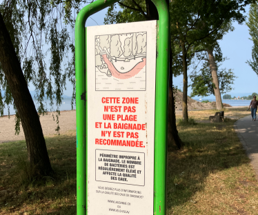

Quantifying changes in bioindicator levels#
This is a draft#
authors: Rachel, Roger
The public service community laboratory association, Hackuarium, has been monitoring recreational water quality on Lake Geneva with eight-week summer sampling campaigns in Montreux since 2016. This pulls together analyses, summarises results from this volunteer work, and potentially will provide an app for future data collection, analyses, and communication.

Introduction#
Lifeguards from Montreux, who had participated in an open summer school around nanotech devices to detect pollution, joined in for one of the regular Hackuarium evenings, #OpenHackuarium, in February 2016 for brainstorming about ways to locally monitor lake water pollution. Microbiological assays were suggested, as used already for several citizen science efforts by groups like WaterWatch.
Experience using chromogenic EasyGel media in an educational context led to the proposition to use such methods for an initial 8-week sampling campaign, funded with a Hackuarium minigrant for the new project, Micro_to_Macro_Water_Pollution - part of the Montreux Clean Beach Project in collaboration with Biodesign for the Real World, and Hammerdirt.
After two years documenting the observed ‘Jazz effect’ - when bioindicator levels for raw sewage entering the lake surpassed Swiss limits for recreational waters by several fold, we had little official response. However, a further sampling season during the pandemic resulted in a significant difference. Additionally, data from official swimming beach monitoring corroborated these results, ultimately leading to analyses in github, with three years of data archived in Zenodo, and an open access publication in 2021 about this volunteer participatory research.
In 2022 and 2023, the Montreux Jazz subsidized further sampling seasons, while communication with the local and federal authorities was limited. In 2022, very little rainfall may have led to surprising results, with bioindicator levels reducing throughout the time of the music festival; while in 2023, after springtime renovations to install ‘distant heating’ circuits under the Montreux boardwalk, the ‘cleanest’ results to date were observed. Perhaps leaks to the sewage system below the installed pipes were repaired in the course of the work.
(For further info, please see: https://wiki.hackuarium.ch/w/Montreux_2023)
Participating organisations#
Hackuarium, Hammerdirt, Biodesign for the Real World, The Montreux Jazz
Research questions#
Are bioindicator levels during the music festival greater than bioindicator levels before or after the event?
Is rain required for pollution peaks to be observed?
What are the year by year total pollution levels for each sampling season (2016/2017/2020/2022/2023)?
Might leaks still occur from the cement sewer system lines under the Montreux boardwalk, as the only serious peak of bioindicator incidence occurred in a particular site - the Vernex ‘baby beach’ - the week after the music festival in 2023?
as a further point: Will lake water pollution in some areas outside official swimming beaches be officially monitored?
Does the lake, in the area of concern, exceed bathing water quality standards during the event?#
Definition of bathing water quality standards
Swiss standard is less than 100 bioindicator bacteria per 100mL for recreational waters, but only swimming beaches are monitored.
Extra questions, as coliform bacteria levels are also assessed officially at swimming beaches, and we learned in 2022 that seagulls and swans can also carry bioindicator bacteria.
In addition to the installation of the pipes for the ‘distant heating’ system, were there upgrades to the local sewage network, and if so, did they have any effect on levels of pollution observed in 2023?#
Can we obtain any further description of potential upgrades to the sewage pipe?
Levels of pollution could include many other things, but in this case the focus is upon raw sewage, so it is basically
Defined by the average number of bioindicators per sampling day before and after the upgrades or
Defined by the probability that a collected sample will exceed the standard before and after the upgrades
Conclusions#
In preliminary conclusions, it can be posited that:
While there is still potential that our participatory research helped improve water quality around the bay, it is also just as likely that the renovation work for the new heating system, done along the quai in the spring of 2023, resulted in changes to the old sewage pipes below.
The lack of rain in 2020 during the music festival was a big confounding factor for this latter part of the study.
The year by year comparisons are needed for full conclusions to be drawn, including the question of whether the last year of sampling actually gave the ‘cleanest’ results to date.
To note: Raw sewage is still being dumped into water bodies around the world, and making more people aware of this is necessary.
Hackuarium volunteers may not manage to follow through for a campaign next summer, unless more (local) people join in.
more information - https://wiki.hackuarium.ch
contact information - biolab(at)hackuarium(point)ch